Chapter Three
Concerning the Maintenance of Kinship
In actual fact, this Chapter is a supplement to the previous Chapters. Nevertheless, since special emphasis has been laid on this matter by Allah Ta'ala in the Holy Qur’an and Rasulullah Sallallaho alaihe wasallam has also done the same in the Ahadith pronouncing threats of severe punishment for breaking kinship, a specific Chapter has been devoted to this subject. Rasulullah Sallallaho alaihe wasallam has said that the reward for Sadaqah given to the kith and kin is doubled. When Ummul Momeneen Maimunah Radhiallaho anha set free a slave-girl, Rasulullah Sallallaho alaihe wasallam told her that it would have been better if she had given her away to her own uncle. Hence, if there be no important religious obligation, it is better to give Sadaqah to a relative than to anyone else. However, in meeting a religious need for the cause of Allah Ta'ala, the reward is multiplied seven hundred times. Numerous encouraging rewards are promised in the Holy Qur’an and Ahadith for the protection of kinship, while punishments are indicated for breaking relationships If all of these were to be covered, the book would become too bulky; therefore, only three Ayaat about the encouragements and three about the punishments have been selected and thereafter a few Ahadith have been discussed.
Section (a)
Ayaat on Spending for Kith and Kins
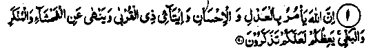
1. Lo! Allah enjoins justice and kindness, and giving to kinsfolk, and forbids lewdness and abomination and wickedness. He exhorts you in order that you may take heed. (an-Nahl: 90)
Note: Allah Ta’ala has ordered (us) in many places in the Qur’an co be well-wishers of our kith and kin and has encouraged us to be generous to them. A few Ayaat in that connection are indicated here, which may be studied separately from a translation of the Qur’an:
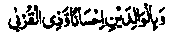
And be good to parents and to kindred. (al-Baqarah: 83)
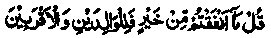
Say: That which ye spend for good (must go) to parents and near kindred. (al-Baqarah: 215)
The following Ayaat of Surah (an-Nisa: 1-10) :
‘O mankind! Be careful of your duty to your Lord Who created you from a single soul and from it created its mate and from the twain hath spread abroad a multitude of men and women. Be careful of your duty towards Allah in Whom ye claim (your rights) of one another, and toward the wombs (that bore you). Lo! Allah hath been a Watcher over you.’
‘Give unto orphans their wealth. Exchange not the good for the bad (in your management thereof) nor absorb their wealth into your own wealth. Lo! that would be a great sin.’
‘And if ye fear that ye will not deal fairly by the orphans, marry of the women, who seem good to you, two or three or four; and if ye fear that ye cannot do justice (to so many); then one (only) or (the captives) that your right hands possess. Thus it is more likely that ye will not do injustice?
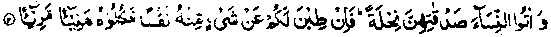
‘And give unto the women, (whom ye marry) free gift of their marriage portions; but if they of their own accord remit unto you a part thereof, then ye are welcome to absorb it (in your wealth).’
‘Give not unto the foolish (what is in) your (keeping of their) wealth, which Allah hath given you to maintain; but feed and clothe them from it, and speak kindly unto them.’ -
‘Prove orphans till they reach the marriageable age; then, if ye find them of sound judgement, deliver over unto them their fortune; and devour it not by squandering and in haste lest they should grow up. Whoso (of the guardians) is rich, let him abstain generously (from taking of the property of orphans); and whoso is poor let him take thereof in reason (for guardianship). And when ye deliver up their fortune unto orphans, have (the transaction) witnessed in their presence. Allah sufficeth as a Reckoner.’
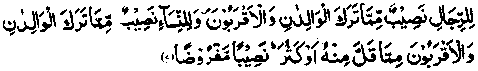
‘Unto the men (of a family) belongeth a share of that which parents and near kindred leave, and unto the women a share of that which parents and near kindred leaver whether it be little or much— a legal share.’
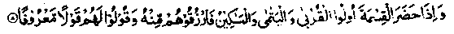
‘And when kinsfolk and orphans and the needy are present at the division (of the heritage), bestow on them therefrom and speak kindly unto them.’
‘And let those fear (in their behaviour toward orphans) who if they left behind them weak offspring would be afraid for them. So let them mind their duty to Allah, and speak justly.’
‘Lo! Those who devour the wealth of orphans wrongfully, they do but swallow fire into their bellies, and they will be exposed to burning flame. (an-Nisaa:1-10).
Also other Ayaat in the Qur’an viz;
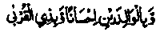
‘(Show) kindness unto parents, and unto near kindred.’ (an-Nisaa: 36). 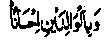
‘And ye do good to parents. (al-An’aam:151).
‘And those who are akin are nearer one to another in the ordinance of Allah.’ (al-Anfaal: 75).
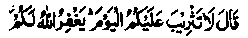
‘Have no fear of this day! May Allah forgive you.’ (Yusuf: 92).
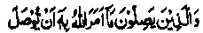
‘Such as unite that which Allah hath commanded should be joined’. (ar-Ra’d: 21). 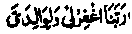
‘Our Lord! Forgive me and my parents’. (Ibrahim: 41).
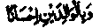
‘And (that ye show) kindness to parents." (Bani Israel: 23)
‘And lower unto them the wing of submission’. (Bani-Israel: 24).
‘Give the kinsman his due’. (Bani-Israel: 26).
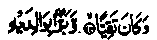
‘And he was devout, And dutiful toward his parents’. (Maryam: 13,14). 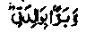
‘And (hath made me) dutiful toward her". (Maryam: 32).
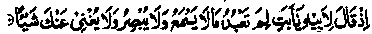
‘When he said unto his father: O my father! Why worshippest thou that which heareth not, nor seeth, nor can in aught avail thee’? (Maryam: 42).
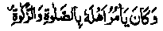
‘He enjoined upon his people worship and almsgiving". (Maryam: 55). 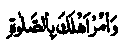
‘And enjoin upon thy people worship’. (Ta-ha: 132):
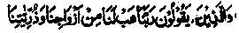
‘And who say: Our Lord! Vouchsafe us comfort of our wives and of our offspring’. (al-Furqan: 74).
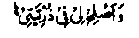
‘And be gracious unto me in the matter of my seed’, (cd-
Ahqaf: 15
‘My Lord! forgive me and my parents’. (an-Nooh: 28).